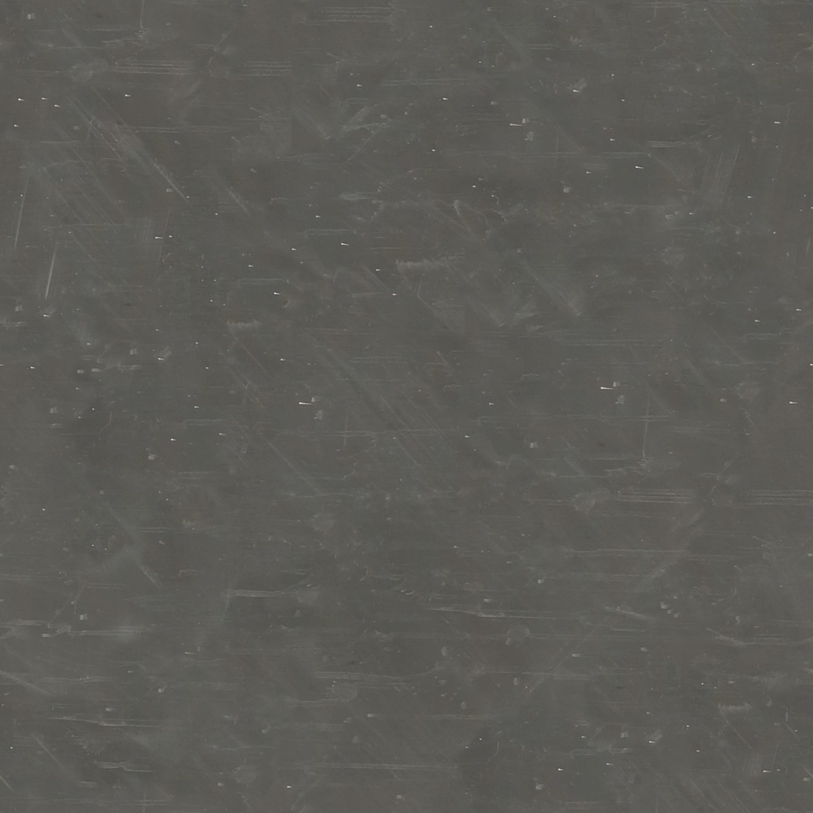

Opsteady diagnoses where a site stands and sequences the right response — deployed by your own team, in the right order.

Placeholder photograph — temporary. CC0-licensed material reference, not final Opsteady brand photography (R.2 governed-temporary use). Final production photography stays inside the material/surface/tools-at-rest category only — no factory, no machinery in operation.
Fragment · typographic authority
Most sites already know something is not working. The harder part is knowing what to fix first — and what to deliberately leave alone.
Stage — Stabilise · Position 2 of 4
Deployment cost
headcount · six-week window
Fragment · diagnosis & sequence grammar
Noise resolves into one settled position — never a percentage, never a blended score. The marked point is the one thing that matters right now.
Every recommendation states what comes before it. One current step, marked amber — never a browsable dependency graph.
Fragment · result language
Riverside Fabrication · illustrative worked exampleunits / week · finishing
Six weeks. Same site, same headcount. £0 spent on the extra operator that was never needed — the constraint was never the press.
Fragment · intervention physicality
Guides, a working sequence planner, and deployment notes — built to be used on the floor within days, not filed away.